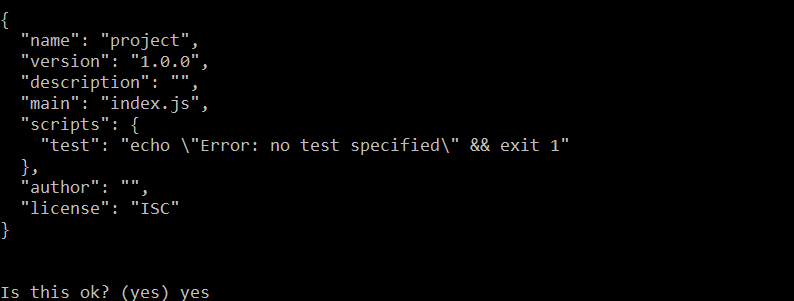
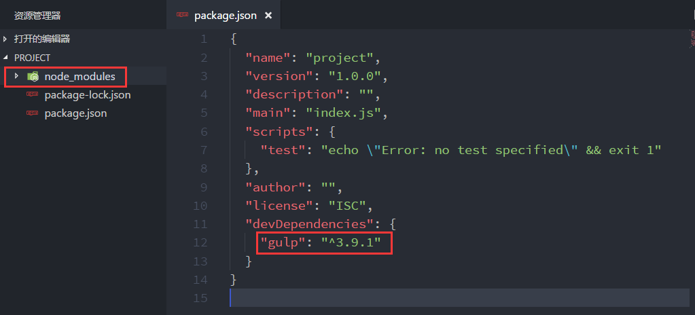
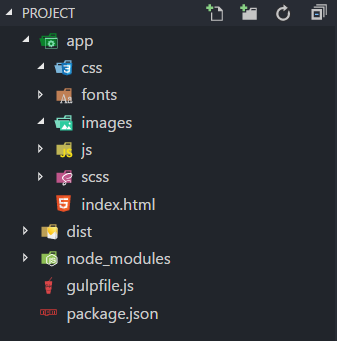
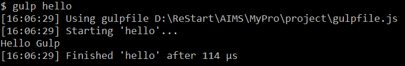
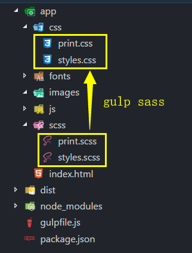
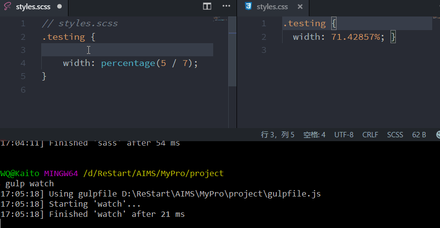
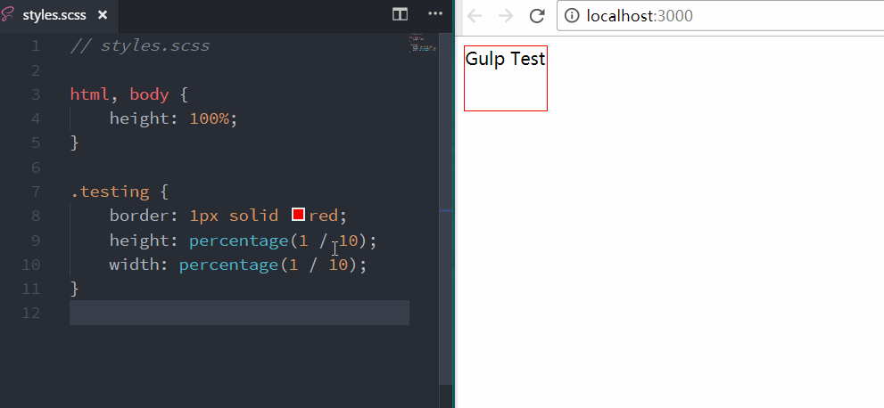

Gulp for beginners(译)


Gulp 是优化项目、提高开发效率的一个非常有用的工具，尤其适用于前端领域。它有非常多的插件，可以实现很多自动化的功能，如创建本地 web 服务器、开发过程中文件修改实时刷新浏览器、对 Sass 或 LESS 进行实时编译、优化资源文件（如拼接压缩 CSS, JS 文件，压缩图片等）。本文翻译自 Zell Liew 的 Gulp for Beginners 一文，原文为英文，采用意译，部分有改动。文章略长，但对快速了解如何使用 Gulp 非常有帮助。
Gulp 常用于管理 web 开发过程中的多个任务，经常用在以下这些前端任务：
- 创建 web 服务器
- 当源码文件保存时，自动刷新浏览器
- 使用诸如 Sass 或 LESS 的预编译器
- 优化资源文件，如 CSS, JavaScript 和图片
以上只是 Gulp 的一部分。如果你深入了解，甚至可以用 Gulp 构建一个静态网站生成器。总之，Gulp 非常强大，如果你想创建一套自定义的构建流程，那么你必须学会如何使用 Gulp。
这篇文件介绍了 Gulp 的基础知识，看完之后你就可以更深入的探索 Gulp。
在我们详细介绍如何使用 Gulp 之前，我们先聊一聊相比于其他类似的工具，为什么我们会选择 Gulp。
为什么使用 Gulp
诸如 Gulp 的工具都被称为「构建工具」，因为它们可以运行多个任务来构建一个网站。目前最流行的构建工具就是 Gulp 和 Grunt。当然，除此之外还有其他的构建工具，如 Broccoli 致力于资源文件的编译。
已经有非常多的文件阐述了 Grunt 和 Gulp 的区别，以及解释为什么用这个而不是那个。最大的不同是你如何用它们来配置你的工作流。比起 Grunt，Gulp 的配置更加短小和简单，并且 Gulp 运行得更快。
现在让我们开始用 Gulp 来构建工作流吧。
总体概述
通过跟着这篇文章进行操作，最后你将自己完成一个工作流的构建，主要包括以下任务：
- 创建 web 服务器
- 将 Sass 编译为 CSS
- 保存源码文件的同时刷新浏览器
- 优化生产环境下的资源文件，如 CSS, JS, fonts, images
你也会学到如何将多个不同的任务链接成一个容易理解和执行的简短命令。
首先在你的电脑上安装 Gulp
安装 Gulp
安装 Gulp 之前，确保你的电脑已经安装好了 Node.js。如果还没有安装 Node.js，到 Node 官网 上下载并安装。
装好 Node.js 后，就可以在命令行中通过以下命令安装 Gulp。
npm install gulp -g
创建 Gulp 项目
首先创建一个名为 project 的文件夹作为我们项目的根目录，并在命令行中跳转到该目录下，执行 npm init 命令来初始化项目。
npm init
运行以上命令后，要求输入项目的基本参数，如项目名称、版本、描述、主入口、测试脚本、作者、许可等，我们可以暂时默认，因为这些参数最终可以在生成的 package.json 中进行配置，执行结果如下图：

package.json是所有 npm 项目的配置文件，它描述了项目的基本信息，更重要的是，它还记录了该项目依赖的第三方模块，我们在 github 上下载的其他人的项目，我们必须要执行npm install命令后才能正常运行项目，其实这个命令就是根据当前项目的package.js，下载所有的依赖模块，放到/node_modules中，有了这些依赖模块，项目才能正常运行。
自动创建好 package.json 后，就可以安装项目的依赖包了，既然这是一个 Gulp 项目，那首先要安装 Gulp 到项目（之前安装的是全局环境）。执行以下命令：
npm install gulp --save-dev
安装完后，你会发现在项目根目录中会出现一个 node_modules 文件夹，这个文件夹就存放着我们项目依赖的所有第三方模块（包括刚刚装好的 gulp）。另外你还会发现 package.jsaon 也发生了变化，在 devDependencies 属性中，出现了 gulp 及其版本。如下图所示：

有人可能会奇怪，为什么我只是安装了
gulp，而 node_modules 文件夹中会出现那么多第三方模块。其实这并不奇怪，gulp也是一个 npm 项目，它也有它的package.json文件，里面记录着gulp所依赖的第三方模块，为了使用gulp当然也需要这些模块了。那gulp所依赖的第三方包又依赖其他的包呢？答案是 npm 会递归地下载所有的依赖模块。这就是 node_modules 文件夹中有这么多依赖包的原因。
以上就准备好 Gulp 项目的基本内容，下面让我们定义文件的目录结构。
定义文件目录结构
Gulp 非常的灵活，因此可以用在任何目录结构。本文使用的目录结构如下图所示：

app 目录用于存放开发环境下的文件，我们开发时所有的代码文件和资源文件都放在 app 目录，dist 目录用于存放将在生成环境下使用的优化过的文件。gulpfile.js 就是 Gulp 的配置文件，接下来我们将在这个配置文件中创建 Gulp 任务。
创建第一个 Gulp 任务
首先使用 require 引入 Gulp 依赖，以便在之后的代码中使用。
var gulp = require('gulp');
require语句告诉 Node，去node_modules目录中搜索名为gulp的包。一旦找到了，我们将包导出的内容赋值给变量gulp。
接下来用变量 gulp 编写一个 Gulp 任务，结构如下：
gulp.task('task-name', function() {
// Stuff here
});
task-name 指定了任务的名称，有了这个名称之后，就可以在命令行中运行该任务，运行的命令为 gulp task-name。
为了测试，我们创建一个 hello 任务吧，这个任务只是简单的打印 Hello Gulp。
gulp.task('hello', function() {
console.log('Hello Gulp');
});
我们在命令行执行 gulp hello 来测试一下
gulp hello
运行结果如下，命令行中打印了 Hello Gulp 。

以上只是一个简单的测试，真正的 Gulp 任务比这复杂得多，它常常包含两个额外的 Gulp 方法，以及很多 Gulp 插件。一个真正的 Gulp 任务看起来可能是这样的：
gulp.task('task-name', function() {
return gulp.src('source-files') // 利用 gulp.src 获取源文件
.pipe(aGulpPlugin()) // 将它发送给一个 gulp 插件
.pipe(gulp.dest('destination')); // 将处理后的文件输出到目标文件夹
});
如你所见，一个真正的 gulp 任务包含两个额外的方法：gulp.src 和 gulp.dest 。gulp.src 告诉 Gulp ，任务所需要的文件从哪里来；而 gulp.dest 告诉 Gulp ，任务完成之后输出文件放到哪去。
下面让我构建一个将 Sass 文件编译为 CSS 文件的任务吧。
利用 Gulp 来预编译
为了将 Sass 编译为 CSS，我们需要借助名为 gulp-sass 的插件，通过以下命令将 gulp-sass 插件安装到项目中。
npm install gulp-sass --save-dev
安装好 gulp-sass 之后，我们修改 gulpfile.js ，首先引入 gulp-sass ：
var sass = require('gulp-sass');
然后我们创建一个名为 sass 的 Gulp 任务：
gulp.task('sass', function() {
return gulp.src('app/scss/styles.scss')
.pipe(sass()) // 利用 gulp-sass 将 Sass 转为 CSS
.pipe(gulp.dest('app/css'));
});
styles.scss 是我们在 app/scss 新建的测试文件，下面我们在 styles.scss 添加一些 Sass 代码，看看我们这个 Gulp 任务能不能成功转换。在 styles.scss 添加如下代码：
// styles.scss
.testing {
width: percentage(5 / 7);
}
在命令行中运行 gulp sass 。任务执行完后，你将会发现在 app/css 目录下多了一个 styles.css 文件，其内容如下：
.testing {
width: 71.42857%; }
可见我们的 sass 任务成功完成了使命。
gulp-sass使用了 LibSass 将 Sass 转换为 CSS，它比基于 Ruby 的方法更快。不过，如果你仍然想用基础 Ruby 的方法，你可以试试gulp-ruby-sass或gulp-compass插件。
有时候我们需要同时将多个 .scss 文件编译成 CSS 文件，这个时候我们可以借助 Node globs 来实现。
Globbing in Node
Globs 是一个匹配模型，它允许你将多个文件添加进 gulp.src 。就像正则表达式，但 glob 只能用于文件路径。
常用的 4 中 globbing 模式有：
*.scss：*是一个通配符，表示匹配根目录下所有后缀名为.scss的文件。**/*.scss： 匹配根目录以其子目录中所有后缀名为.scss的文件。!not-me.scss：排除指定文件。*.+(scss|sass)： 允许多个匹配模式。本例中，匹配根目录下所有后缀名为.scss和.sass的文件。
下面我们修改 gulpfile.js 中的 sass 任务：
gulp.task('sass', function() {
return gulp.src('app/scss/**/*.scss')
.pipe(sass()) // 利用 gulp-sass 将 Sass 转为 CSS
.pipe(gulp.dest('app/css'));
});
现在，任何位于 app/scss 及其子目录的后缀名为 .scss 的文件，都会自动被添加进 gulp.src 。如我们在 app/scss 目录中额外添加了一个 print.scss 文件。然后执行 gulp sass ，会发现 app/css 目录下多了一个 print.css ，说明该任务同时对多个文件进行了转换。

现在，我们可以通过运行 gulp sass 同时实现对多个 scss 文件的转换。问题是，每次修改了 scss 文件，都得运行一次 gulp sass 命令来将其转换为 CSS 文件，这个过程非常繁琐的。
幸运的是，我们可以通过 watch 方法来自动运行 sass 任务。
观察（Watching） sass 文件的变化
Gulp 提供了一个 watch 方法用来检查文件是否被保存，它的基本语法是这样的：
// Gulp watch syntax
gulp.watch('files-to-watch', ['tasks', 'to', 'run']);
对于我们的项目，可以这么写：
// Gulp watch syntax
gulp.watch('app/scss/**/*.scss', ['sass']);
更多的时候，我们想 watch 不同类型的文件，因此我们可以把多个 watch 封装到一个 watch 任务。
gulp.task('watch', function() {
gulp.watch('app/scss/**/*.scss', ['sass']);
// Other watchers
});
现在运行 gulpt watch ，开启 watch 任务。现在我们修改并保存匹配的文件后，将立即执行指定的任务，如下图所示：

通过 Browser Sync 实现浏览器同步刷新
Browser Sync 通过创建一个 web 服务器，使 web 开发更加快捷。
首先我们将 Browser Sync 安装到项目。
npm install browser-sync --save-dev
安装好后，在 gulpfile.js 引入。
var browserSync = require('browser-sync').create();
接下来，我们创建一个 browserSync 任务，该任务利用 Browser Sync 来让 Gulp 创建一个服务器。
gulp.task('browserSync', function() {
browserSync.init({
server: {
baseDir: 'app'
}
});
});
baseDir 指定了 server 的根目录。
另外我们还需要修改 sass 任务的代码，确保当 sass 任务运行的时候，将更新过的样式注入到浏览器。
gulp.task('sass', function() {
return gulp.src('app/scss/**/*.scss')
.pipe(sass()) // 利用 gulp-sass 将 Sass 转为 CSS
.pipe(gulp.dest('app/css'))
.pipe(browserSync.reload({
stream: true
}));
});
为了执行 watch 之前，先执行一次 browserSync 和 sass 任务，我们修改 watch 任务的代码，如下：
gulp.task('watch', ['sass', 'browserSync'], function() {
gulp.watch('app/scss/**/*.scss', ['sass']);
// Other watchers
});
这样一来，watch 任务执行之前，会先执行 sass 和 browserSync ，然后通过监听 sass 任务的执行来刷新浏览器视图。效果如下图：

除了监听 sass 文件的保存之后，我们还可以监听 html 和 js 文件的保存，实现只要文件一保存，就更新浏览器视图。因此，更新 watch 任务代码如下：
gulp.task('watch', ['sass', 'browserSync'], function() {
gulp.watch('app/scss/**/*.scss', ['sass']);
// 当 HTML 或 JS 文件发生变化时，重新载入浏览器
gulp.watch('app/*.html', browserSync.reload);
gulp.watch('app/js/**/*.js', browserSync.reload);
});
到目前为止，我们已经通过 Gulp 实现了三个功能：
- 创建一个用于开发的服务器
- 使用 Sass 预编译器
- 当文件发生变化时，同步刷新浏览器
以下的部分将会讨论如何通过 Gulp 来优化资源文件，先从优化 CSS 和 JavaScript 文件说起。
优化 CSS 和 JavaScript 文件
优化包括两个方面：压缩和拼接。
开发者常常面临的问题是，很难按正确的顺序拼接脚本文件。
比如我们在 index.html 中引入了 3 个脚本文件：
<body>
<script src="js/lib/a-library.js"></script>
<script src="js/lib/another-library.js"></script>
<script src="js/main.js"></script>
</body>
这些脚本文件位于不同的目录，我们很难利用传统的插件（如 gulp-concatenate）将它们正确的拼接。
所幸，一个叫做 gulp-useref 的插件解决了这个问题。
gulp-useref 能将任何数量的 CSS 和 JavaScript 文件拼接成一个单独的文件。它通过查找以 <!--build: 开头，以 <!--endbuild--> 结尾的代码块来实现的。标记语法如下：
<!-- build:<type> <path> -->
... HTML Markup, list of script / link tags
<!--endbuild-->
<type> 可以是 js, css , remove 。最好将 <type> 设置为你想拼接文件的类型。如果你把 type 设置为 remove ，Gulp 将会忽略这个 build block。
<path> 是拼接后的文件存放的路径。
举个例子，比如我们想将以下 3 个 JS 文件拼接，并把拼接好的文件存放到 js 目录，名为 main.min.js 。我们可以这么写：
<!-- build:js js/main/min.js -->
<script src="js/lib/a-library.js"></script>
<script src="js/lib/another-library.js"></script>
<script src="js/main.js"></script>
<!-- endbuild -->
好了，熟悉了 gulp-useref 的基本标记语法，让我们来实战以下吧。先将 gulp-useref 安装到项目目录，并在 gulpfile.js 文件中引入：
npm install gulp-useref --save-dev
var useref = require('gulp-useref');
创建 useref 任务：
gulp.task('useref', function() {
return gulp.src('app/*.html')
.pipe(useref())
.pipe(gulp.dest('dist'));
});
然后在命令行执行 gulp useref ，你会发现三个脚本文件会合并为一个 main.min.js ，并且 html 中引用脚本的代码也自动修改了。
拼接完之后还需要对 JS 文件进行压缩。我们采用 gulp-uglify 插件来压缩 JS 文件，另外我们还需要一个 gulp-if 插件来保证我们只对 JS 文件进行压缩。
安装 gulp-uglify 和 gulp-if：
npm install gulp-uglify --save-dev
npm install gulp-if --save-dev
在 gulpfile.js 中引入 gulp-uglify 和 gulp-if ：
var uglify = require('gulp-uglify');
var gulpIf = require('gulp-if');
修改 useref 任务的代码：
gulp.task('useref', function() {
return gulp.src('app/*.html')
.pipe(useref())
.pipe(gulpIf('*.js', uglify()))
.pipe(gulp.dest('dist'));
});
再次执行 gulp useref， 发现 main.min.js 中的代码已经是压缩过了的了。
我们可以用相同的方法拼接 CSS 文件，对样式的引用标签进行标记：
<!-- build:css css/styles.min.css -->
<link rel="stylesheet" href="css/styles.css">
<link rel="stylesheet" href="css/another-stylesheet.css">
<!-- endbuild -->
另外，我们再安装一个 CSS 文件的压缩插件，叫做 gulp-cssnano ：
npm install gulp-cssnano --save-dev
引入 gulp-cssnano 并修改 useref 任务：
gulp.task('useref', function() {
return gulp.src('app/*.html')
.pipe(useref())
.pipe(gulpIf('*.js', uglify()))
.pipe(gulpIf('*.css', cssnano()))
.pipe(gulp.dest('dist'));
});
在命令行运行 gulp useref 之后，可以看到 CSS 文件也被拼接和压缩了。
现在通过 useref 任务，可以同时拼接压缩 CSS 文件和 JS 文件了。接下来让我们看看怎么优化图片吧。
优化图片
你可能猜到了，我们又需要安装插件了。没错，这次我们需要安装 gulp-imagemin 插件，专门用来压缩图片的。
安装并引入：
npm install gulp-imagemin --save-dev
var imagemin = require('gulp-imagemin');
我们将对 png , jpg , gif 和 ·svg 格式的图片都进行压缩，新增 images 任务，代码如下：
gulp.task('images', function() {
return gulp.src('app/images/**/*.+(png|jpg|gif|svg)')
.pipe(imagemin())
.pipe(gulp.dest('dist/images'));
});
不同类型的图片可以进行不同的优化，例如，你可以通过将 interlaced 字段设置为 true ，来生成 interlaced GIFs。代码如下：
gulp.task('images', function() {
return gulp.src('app/images/**/*.+(png|jpg|gif|svg)')
.pipe(imagemin({
// Setting interlaced to true
interlaced: true
}))
.pipe(gulp.dest('dist/images'));
});
压缩图片是非常耗时的过程，为了避免没有必要的重复处理，我们使用 gulp-cache 插件，安装并引入：
npm install gulp-cache --save-dev
var cache = require('gulp-cache');
改进 images 任务的代码：
gulp.task('images', function() {
return gulp.src('app/images/**/*.+(png|jpg|gif|svg)')
.pipe(cache(imagemin({
// Setting interlaced to true
interlaced: true
})))
.pipe(gulp.dest('dist/images'));
});
以上便是图片的优化过程。接下来我们来处理字体目录。
复制字体目录到 dist
因为字体文件已经是优化过了的，因此我们只要将字体文件夹复制到 dist 目录即可，这个非常简单，看一下代码：
gulp.task('fonts', function() {
return gulp.src('app/fonts/**/*')
.pipe(gulp.dest('dist/fonts'));
});
到目前为止，我们一共有 6 个任务，它们分别是：
sass- 将 Sass 转换为 CSSwatch- 监听文件的变化，实时刷新浏览器browserSync- 创建本地 web 服务器useref- 拼接并压缩 JS 和 CSS 文件images- 压缩图片资源fonts- 复制字体文件夹
每一个任务我们都得单独用不同的命令调用，因此我们想把所有任务整合到一个命令。在我们这么做之前，让我们先看看如何自动清除生成的文件。
自动清除生成的文件
前面我们已经学会了如何自动生成文件，那么当我们不需要某些文件时，如何自动清除它们呢。我们使用 del 来帮助我们完成清除。首先，在项目中安装 del 。
npm install del --save-dev
在 gulpfile.js 中引入：
var del = require('del');
添加 clean:dist 任务：
gulp.task('clean:dist', function() {
return del.sync('dist');
});
另外，如果我们想清除缓存，再创建一个 cache:clear 任务：
gulp.task('cache:clear', function() {
return cache.clearAll();
});
OK! 现在我们来将多个任务整合到一起吧！
整合 Gulp 任务
到目前为止我们所有的任务可以分为两类：
- 第一类是开发过程中的任务。包括将 Sass 编译为 CSS，监听源文件变化并重新刷新浏览器
- 第二类是优化过程中的任务。包括优化资源文件 CSS，JavaScript 和图片，以及将字体文件夹从
app复制到dist
我们已经将第一类任务整合为一个简单的 gulp watch 命令。
第二类的任务包括 clean:dist , sass , useref , images , fonts ，我们通过创建一个 build 任务将它们整合到一起。
gulp.task('build', ['clean:dist', 'sass', 'useref', 'images', 'fonts'], function() {
console.log('Building files');
});
然后，上述代码是有问题的。有可能 clean:dist 任务还没有完成，sass ， useref ，甚至 images 都执行完了，这会导致新生成的文件都会被 clean:dist 删除。
为了保证任务的执行顺序，我们需要安装一个额外的插件 run-sequence 。
npm install run-sequence --save-dev
引入 run-sequence ，并更新 build 任务：
var runSequence = require('run-sequence');
function onBuild() {
console.log('Build successfully');
}
gulp.task('build', function(onBuild) {
runSequence('clean:dist',
['sass', 'useref', 'images', 'fonts'],
onBuild
);
});
以上代码确保了 clean:dist 任务首先执行，等它执行完成后，才开始执行后续的任务，后续这些任务的执行顺序无关紧要，所以将它们放到同一个数组中。全部任务执行完之后，调用我们自定义的回调函数 onBuild 。
为了保证前后一致，我们将前面定义的 watch 任务也用 run-sequence 来实现。
gulp.task('watch', function() {
gulp.watch('app/scss/**/*.scss', ['sass']);
// 当 HTML 或 JS 文件发生变化时，重新载入浏览器
gulp.watch('app/*.html', browserSync.reload);
gulp.watch('app/js/**/*.js', browserSync.reload);
});
gulp.task('default', function() {
runSequence(['sass', 'browserSync', 'watch']);
});
注意到，我们去掉了 watch 原先的第二个参数，而是把 sass , broserSync 和 watch 任务通过 run-sequence 整合到了一个 default 任务。为什么要命名为 default 呢？因此这样我们只要简单的在命令行运行 gulp ，就可以很方便的执行这个任务了。